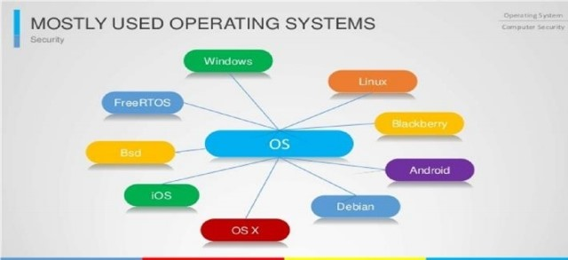
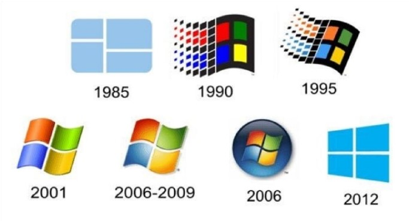
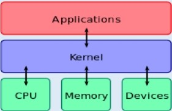
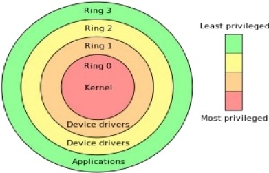

An operating system (OS) is software that manages computer hardware resources, runs other programs, and provides common services for the user and application software.
For hardware functions such as input & output and memory allocation, the operating system acts as an intermediary between application programs and the computer hardware. Operating systems are found on any device that contains a computer - from cellular phones and video game consoles to supercomputers and web servers.
Examples of popular modern operating systems are: UNIX (Linux & Mac OS),Microsoft Windows and various systems like Android and iOS. Early computers were built to perform a series of single tasks, like a calculator. Operating systems did not exist in their modern and more complex forms until the early 1960s.
When personal (home) computers by Companies such as Apple Inc., Atari, IBM and Amiga became popular in the 1980s, vendors added operating system features, such as multi-user and multi-tasking functionality, that had previously become widely used on mainframe and minicomputers (that once bridged the gap between mainframes and PCs). Later, many features such as graphical user interfaces were developed specifically for personal computer operating systems.
An operating system consists of many parts. One of the most important components is the kernel, which controls low-level processes 8 that the average user usually cannot see: it controls how memory is read and written, the order in which processes (running programs) are executed, how information is received and sent by devices like the monitor, keyboard and mouse, and decides how to interpret information received from networks. The user interface is a component that directly interacts with the computer user, allowing him or her to control and run programs. The user interface may be graphical with icons and a desktop, or textual, with a command line. Application programming interfaces provide services and code libraries that let applications developers write modular code.
Which features are considered part of the operating system is defined differently by some. For example, Microsoft Windows considers its user interface to be part of the operating system, as described above. On the other hand, UNIX and Linux have a long history of allowing the end user to choose, or even to create their own, user interface.

For our purposes, the operating system always resides in RAM while the computer is operating.
A single-tasking system can only run one program at a time, while a multi-tasking operating system allows more than one program to be running in concurrency. This is achieved by time-sharing, dividing the available processor time between multiple processes that are each interrupted repeatedly in time slices by a task-scheduling subsystem of the operating system. Multi-tasking may be characterized in preemptive and co-operative types.
In preemptive multitasking, the operating system slices the CPU time and dedicates a slot to each of the programs.
UNIX-like operating systems, e.g., Solaris, Linux, as well as AmigaOS support preemptive multitasking. Cooperative multitasking is achieved by relying on each process to provide time to the other processes in a defined manner. 16-bit versions of Microsoft Windows used cooperative multi-tasking. 32-bit versions of both Windows NT and Win9x used preemptive multi-tasking.
Single-user operating systems have no facilities to distinguish users, but may allow multiple programs to run in tandem. A multi-user operating system extends the basic concept of multi-tasking with facilities that identify processes and resources, such as disk space, belonging to multiple users, and the system permits multiple users to interact with the system at the same time. Time-sharing operating systems schedule tasks for efficient use of the system and may also include accounting software for cost allocation of processor time, mass storage, printing, and other resources to multiple users.
A distributed operating system manages a group of distinct computers and makes them appear to be a single computer. The development of networked computers that could be linked and communicate with each other gave rise to distributed computing. Distributed computations are carried out on more than one machine. When computers in a group work in cooperation, they form a distributed system.
In an OS, distributed and cloud computing context, templating refers to creating a single virtual machine image as a guest operating system, then saving it as a tool for multiple running virtual machines. The technique is used both in virtualization and cloud computing management, and is common in large server warehouses.
Embedded operating systems are designed to be used in embedded computer systems. They are designed to operate on small machines like PDAs with less autonomy. They are able to operate with a limited number of resources. They are very compact and extremely efficient by design. Windows CE and Minx 3 are some examples of embedded operating systems.
A real - time operating system is an operating system that guarantees to process events or data by a specific moment in time. A real-time operating system may be single- or multi-tasking, but when multitasking, it uses specialized scheduling algorithms so that a deterministic nature of behavior is achieved. An event-driven system switches between tasks based on their priorities or external events while time-sharing operating systems switch tasks based on clock interrupts
A library operating system is one in which the services that a typical operating system provides, such as networking, are provided in the form of libraries and composed with the application and configuration code to construct a unikernel: a specialized, single address space, machine image that can be deployed to cloud or embedded environments.
UNIX was originally written in assembly language. Ken Thompson wrote B, mainly based on BCPL, based on his experience in the MULTICS project. B was replaced by C, and UNIX, rewritten in C, developed into a large, complex family of inter-related operating systems which have been influential in every modern operating system.
The Unix-like family is a diverse group of operating systems, with several major sub-categories including System V,BSD, and Linux. The name "UNIX" is a trademark of The Open Group which licenses it for use with any operating system that has been shown to conform to their definitions. "UNIX-like" is commonly used to refer to the large set of operating systems which resemble the original UNIX.
Unix-like systems run on a wide variety of computer architectures. They are used heavily for servers in business, as well as workstations in academic and engineering environments. Free UNIX variants, such as Linux and BSD, are popular in these areas.
Four operating systems are certified by The Open Group (holder of the UNIX trademark) as UNIX. HP's HP-UX and IBM's AIX are both descendants of the original System V Unix and are designed to run only on their respective vendor's hardware.
In contrast, Sun Microsystems's Solaris scan run on multiple types of hardware, including x86 and Sparc servers, and PCs. Apple's macOS, a replacement for Apple's earlier (non-Unix) Mac OS, is a hybrid kernel-based BSD variant derived from NeXTSTEP, Mach, and FreeBSD. UNIX interoperability was sought by establishing the POSIX standard.
The POSIX standard can be applied to any operating system, although it was originally created for various UNIX variants.
A subgroup of the UNIX family is the Distribution family, which includes FreeBSD, NetBSD, and OpenBSD. These operating systems are most commonly found on webservers, although they can also function as a personal computer OS. The Internet owes much of its existence to BSD, as many of the protocols now commonly used by computers to connect, send and receive data over a network were widely implemented and refined in BSD. The Web was also first demonstrated on a number of computers running an OS based on BSD called NeXTSTEP.
In 1974, Berkeley installed its first UNIX system. Over time, students and staff in the computer science department there began adding new programs to make things easier, such as text editors. When Berkeley received new VAX computers in 1978 with UNIX installed, the school's undergraduates modified UNIX even more in order to take advantage of the computer's hardware possibilities. The Defense Advanced Research Agency of the US Defense took interest, and decided to fund the project. Many schools, corporations, and government organizations took notice and started to use Berkeley's version of UNIX instead of the official one distributed by AT&T.
Steve Jobs, upon leaving Apple Inc. in 1985, formed NeXT Inc., a company that manufactured high-end computers running on a variation of BSD called NeXTSTEP. One of these computers was used by Berners-Lee as the first web server to create the World Wide Web.
Developers like Keith Bosticen courage the project to replace any non-free code that originated with Bell Labs. Once this was done, however, AT&T sued. After two years of legal disputes, the BSD project spawned a number of free derivatives, such as NetBSD and FreeBSD (both in 1993), and OpenBSD (from NetBSD in 1995).
MacOS (formerly "Mac OS X" and later "OS X") is a line of core graphical operating systems developed, marketed, and sold by Apple Inc., the latest of which is pre-loaded on all currently shipping Macintosh computers. MacOS is the successor to the original classic Mac OS, which had been Apple's primary operating system since 1984. Unlike its predecessor, macOS is a UNIX operating system built on technology that had been developed at Next through the second half of the 1980s and up until Apple purchased the company in early 1997. The operating system was first released in 1999 as Mac OS XServer 1.0, followed in March 2001 by a client version (Mac OS X v10.0 "Cheetah").
Since then, six more distinct "client" and "server" editions of macOS have been released, until the two were merged in OS X 10.7 "Lion".
Prior to its merging with macOS, the server edition - macOS Server- was architecturally identical to its desktop counterpart and usually ran on Apple's line of Macintosh server hardware. macOS Server included work group management and administration software tools that provide simplified access to key network services, including a mail transfer agent, a Samba server, an LDAP server, a server, and others.
With Mac OS X v10.7 Lion, all server aspects of Mac OS X Server have been integrated into the client version and the product re-branded as "OS X" (dropping "Mac" from the name). The server tools are now offered as an application.
The Linux kernel originated in 1991, as a project of Linus Torvalds, while a university student in Finland. He posted information about his project on a newsgroup for computer students and programmers, and received support and assistance from volunteers who succeeded in creating a complete and functional kernel.
Linux is Unix-like, but was developed without any UNIX code, unlike BSD and its variants. Because of its open license model, the Linux kernel code is available for study and modification, which resulted in its use on a wide range of computing machinery from supercomputers to smart-watches.
Although estimates suggest that Linux is used on only 1.82% of all "desktop" (or laptop) PCs, it has been widely adopted for use in servers and embedded systems such as cell phones.
Linux has superseded UNIX on many platforms and is used on most supercomputers including the top 385. Many of the same computers are also on Green 500(but in different order), and Linux runs on the top 10. Linux is also commonly used on other small energy-efficient computers, such as Smartphone and smart watches.
The Linux kernel is used in some popular distributions, such as Red Hat, Debian, Ubuntu, Linux Mint and Google's Android, Chrome OS, and Chromium OS.
Microsoft Windows is a family of proprietary operating systems designed by Microsoft Corporation and primarily targeted to Intel architecture based computers, with an estimated 88.9 percent total usage share on Web connected computers. The latest version is Windows 10.In 2011, Windows 7 overtook Windows XP as most common version in use.
Microsoft Windows was first released in 1985, as an environment running on top of MS-DOS, which was the standard operating system shipped on most Intel architecture personal computers at the time. In 1995, Windows 95 was released which only used MS-DOS as a bootstrap.
For backwards compatibility, Win9x could run real-mode MS-DOS and 16-bit Windows 3.xdrivers. Windows ME, released in 2000, was the last version in the Win9x family. Later versions have all been based on the Windows NT kernel. Current client versions of Windows run on IA-32, x86-64 and 32-bit ARM microprocessors. In addition Itanium is still supported in older server version Windows Server 2008 R2. In the past, Windows NT supported additional architectures.
Server editions of Windows are widely used. In recent years, Microsoft has expended significant capital in an effort to promote the use of Windows as a server operating system.
However, Windows' usage on servers is not as widespread as on personal computers as Windows competes against Linux and BSD for server market share. ReactOS is a Windows-alternative operating system, which is being developed on the principles of Windows - without using any of Microsoft's code.

There have been many operating systems that were significant in their day but are no longer so, such as AmigaOS; OS/2from IBM and Microsoft; classic Mac OS, the non-Unix precursor to Apple's macOS; BeOS; XTS-300;RISC OS; MorphOS; Haiku; Bare Metal and Free Mint. Some are still used in niche markets and continue to be developed as minority platforms for enthusiast communities and specialist applications. OpenVMS, formerly from DEC, is still under active development by Hewlett-Packard. Yet other operating systems are used almost exclusively in academia, for operating systems education or to do research on operating system concepts. A typical example of a system that fulfills both roles is MINIX, while for example Singularity is used purely for research. Other operating systems have failed to win significant market share, but have introduced innovations that have influenced mainstream operating systems, not least Bell Labs' Plan 9.
The components of an operating system all exist in order to make the different parts of a computer work together. All user software needs to go through the operating system in order to use any of the hardware, whether it is as simple as a mouse or keyboard or as complex as an Internet component.
With the aid of the firmware and device drivers, the kernel provides the most basic level of control over all of the computer's hardware devices. It manages memory access for programs in the RAM, it determines which programs get access to which hardware resources, it sets up or resets the CPU's operating states for optimal operation at all times, and it organizes the data for long-term non-volatile storage with file systems on such media as disks, tapes, flash memory, etc.
A kernel connects the application software to the Hardware of a computer.

The operating system provides an interface between an application program and the computer hardware, so that an application program can interact with the hardware only by obeying rules and procedures programmed into the operating system. The operating system is also a set of services which simplify development and execution of application programs. Executing an application program involves the creation of a process by the operating system kernel which assigns memory space and other resources, establishes a priority for the process in multi-tasking systems, and loads program binary code into memory, and initiates execution of the Application program which then interacts with the user and with hardware devices.
Interrupts are central to operating systems, as they provide an efficient way for the operating system to interact with and react to its environment. The alternative - having the operating system "watch" the various sources of input for events (polling) that require action - can be found in older systems with very small stacks(50 or 60 bytes) but is unusual in modern systems with large stacks. Interrupt-based programming is directly supported by most modern CPUs. Interrupts provide a computer with a way of automatically saving local register contexts, and running specific code in response to events. Even very basic computers support hardware interrupts, and allow the programmer to specify code which may be run when that event takes place.
When an interrupt is received, the computer's hardware automatically suspends whatever program is currently running, saves its status, and runs computer code previously associated with the interrupt; this is analogous to placing a bookmark in a book in response to a phone call. In modern operating systems, interrupts are handled by the operating system's kernel. Interrupts may come from either the computer's hardware or the running program.
When a hardware device triggers an interrupt, the operating system's kernel decides how to deal with this event, generally by running some processing code. The amount of code being run depends on the priority of the interrupt (for example: a person usually responds to a smoke detector alarm before answering the phone). The processing of hardware interrupts is a task that is usually delegated to software called a device driver, which may be part of the operating system's kernel, part of another program, or both. Device drivers may then relay information to a running program by various means.
A program may also trigger an interrupt to the operating system. If a program wishes to access hardware, for example, it may interrupt the operating system's kernel, which causes control to be passed back to the kernel. The kernel then processes the request. If a program wishes additional resources (or wishes to shed resources) such as memory, it triggers an interrupt to get the kernel's attention.
Odern microprocessors (CPU or MPU) support multiple modes of operation. CPUs with this capability offer at least two modes: user mode and supervisor mode. In general terms, supervisor mode operation allows unrestricted access to all machine resources, including all MPU instructions. User mode operation sets limits on instruction use and typically disallows direct access to machine resources. CPUs might have other modes similar to user mode as well, such as the virtual modes in order to emulate older processor types, such as 16-bit processors on a 32-bit one, or 32-bit processors on a 64-bitone. At power-on or reset, the system begins in supervisor mode. Once an operating system kernel has been loaded and started, the boundary between user mode and supervisor mode (also known as kernel mode) can be established.
Managers, operate within user mode, and can only access machine resources by turning control over to the kernel, a process which causes a switch to supervisor mode. Typically, the transfer of control to the kernel is achieved by executing a software interrupt instruction, such as the Motorola 68000 TRAP instruction. The software interrupt causes the microprocessor to switch from user mode to supervisor mode and begin executing code that allows the kernel to take control.
In user mode, programs usually have access to a restricted set of microprocessor instructions, and generally cannot execute any instructions that could potentially cause disruption to the system's operation. In supervisor mode, instruction execution restrictions are typically removed, allowing the kernel unrestricted access to all machine resources.
The term "user mode resource" generally refers to one or more CPU registers, which contain information that the running program isn't allowed to alter. Attempts to alter these resources generally causes a switch to supervisor mode, where the operating system can deal with the illegal operation the program was attempting, for example, by forcibly terminating ("killing") the program).

Privilege rings for the x86microprocessorArchitecture available in protected mode. Operating systems determine which processes run in each mode.